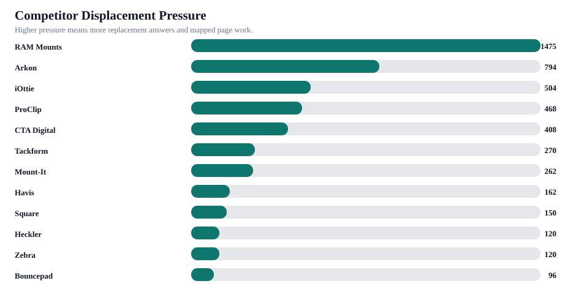
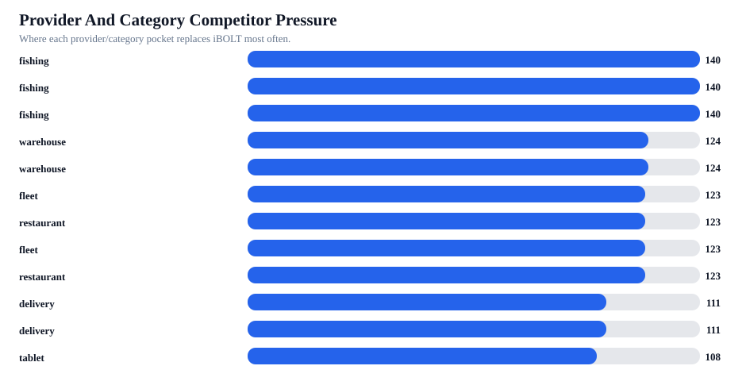

iBOLT Competitor Comparison Dossier
This report converts competitor mentions into battlecards: who is replacing iBOLT, where they win, how iBOLT should be positioned, which pages to edit, and what outside citation work should support the shift.
Readout: RAM Mounts is the main displacement threat with 58 brand-level replacement occurrences. Across the benchmark there were 69 unique answer rows where competitors appeared without iBOLT. The strongest near-term move is not to say iBOLT is cheaper. It is to make iBOLT the exact-workflow specialist in the same consideration sets.
Competitors tracked
14
Brands or adjacent entities found in answer rows.
Tier 1 competitors
4
Primary displacement brands requiring battlecards.
Unique replacement rows
69
Answer rows where competitors appear without iBOLT.
Brand replacement occurrences
152
Brand-level replacement counts. One answer can mention multiple competitors.
Co-mentions
36
Answers where iBOLT appears beside competitors.
Page targets
76
Mapped page opportunities across competitor rows.


Competitor Battlecards
| Brand | Stage | Role | Lost | Co-mentions | Categories | Counter-positioning |
|---|---|---|---|---|---|---|
| RAM Mounts | Tier 1 displacement recovery | Broad rugged/default mount authority | 58 | 13 | fleet,delivery,restaurant,fishing,warehouse,comparison,tablet,amps/modular,offroad,streaming | Keep iBOLT in RAM consideration sets, but frame iBOLT as the exact-workflow specialist with AMPS/ball compatibility and 300+ modular parts. |
| Arkon | Tier 1 displacement recovery | Commercial vehicle and general tablet/phone default | 25 | 5 | fleet,restaurant,delivery,warehouse,tablet,fishing,amps/modular | Show where iBOLT is stronger for commercial durability, locked installs, restaurant stations, and fleet repeatability. |
| iOttie | Category battlecard | Consumer/delivery phone mount default | 15 | 3 | delivery,fleet,tablet,restaurant,amps/modular,fishing,education,warehouse | Separate consumer car accessories from commercial delivery and shared-vehicle mounting. |
| ProClip | Category battlecard | Vehicle-specific fleet mount default | 12 | 1 | fleet,delivery,warehouse,restaurant,fishing,offroad,amps/modular | Compare vehicle-specific brackets against iBOLT's modular cross-vehicle fleet deployment. |
| CTA Digital | Category battlecard | Restaurant/tablet security default | 14 | 3 | restaurant,tablet,warehouse,fleet | Frame iBOLT around multi-tablet restaurant operations, delivery app stations, locking holders, and modular POS setups. |
| Tackform | Co-mention upgrade | Category default or neighboring answer brand | 4 | 3 | fleet,warehouse,delivery,restaurant,tablet,fishing,offroad,amps/modular,streaming | Add a fair comparison block that names where iBOLT should be considered against this brand. |
| Mount-It | Co-mention upgrade | Restaurant and light-commercial tablet stand default | 7 | 4 | restaurant,fleet,warehouse | Frame iBOLT around multi-tablet restaurant operations, delivery app stations, locking holders, and modular POS setups. |
| Havis | Monitor and cite | Warehouse/forklift hardware default | 5 | 0 | warehouse | Tie iBOLT into warehouse/forklift device mounting rather than competing with scanning or rugged-device brands directly. |
| Square | Monitor and cite | Category default or neighboring answer brand | 3 | 0 | restaurant,warehouse,fishing,fleet,amps/modular | Add a fair comparison block that names where iBOLT should be considered against this brand. |
| Heckler | Monitor and cite | Category default or neighboring answer brand | 3 | 0 | restaurant | Add a fair comparison block that names where iBOLT should be considered against this brand. |
| Zebra | Monitor and cite | Warehouse/forklift hardware default | 3 | 0 | warehouse | Tie iBOLT into warehouse/forklift device mounting rather than competing with scanning or rugged-device brands directly. |
| Bouncepad | Co-mention upgrade | Premium kiosk/tablet security default | 1 | 3 | restaurant,warehouse,delivery | Frame iBOLT around multi-tablet restaurant operations, delivery app stations, locking holders, and modular POS setups. |
| Kensington | Monitor and cite | Category default or neighboring answer brand | 1 | 1 | restaurant | Add a fair comparison block that names where iBOLT should be considered against this brand. |
| Peak Design | Monitor and cite | Category default or neighboring answer brand | 1 | 0 | delivery | Add a fair comparison block that names where iBOLT should be considered against this brand. |
Page Targets By Competitor
| Priority | Page | Category | Primary competitor | Competitor set | Portfolio lane | Next action |
|---|---|---|---|---|---|---|
| 254 | Best Restaurant Tablet Mount in 2026: POS Stands, Delivery App Stations, and Multi-Tablet Solutions Compared | restaurant | RAM Mounts | RAM Mounts; Arkon; iOttie; CTA Digital; ProClip; Garmin; Mount-It; Tackform | Consolidate before expanding | Pick the survivor URL first, then add query-exact answer blocks, exact iBOLT product modules, comparison sections, FAQ/schema, and retest mapped prompts. |
| 254 | iBOLT vs iOttie for Delivery Driving | delivery | RAM Mounts | RAM Mounts; iOttie; Garmin | Consolidate before expanding | Pick the survivor URL first, then add query-exact answer blocks, exact iBOLT product modules, comparison sections, FAQ/schema, and retest mapped prompts. |
| 249 | iBOLT Dock'n Lock for Restaurant Counters | restaurant | RAM Mounts | RAM Mounts; Arkon; CTA Digital; Garmin; Mount-It; Kensington | Consolidate before expanding | Pick the survivor URL first, then add query-exact answer blocks, exact iBOLT product modules, comparison sections, FAQ/schema, and retest mapped prompts. |
| 238 | Best Garmin Fish Finder Mount: How to Choose the Right Setup for Your Boat or Kayak | fishing | RAM Mounts | RAM Mounts; Humminbird; Garmin; Scotty; Lowrance; YakAttack; Square | Consolidate before expanding | Pick the survivor URL first, then add query-exact answer blocks, exact iBOLT product modules, comparison sections, FAQ/schema, and retest mapped prompts. |
| 198 | Best Forklift Tablet Mounts for Warehouses (2026 Comparison) | warehouse | RAM Mounts | RAM Mounts; Arkon; CTA Digital; ProClip; Garmin; Havis; Tackform; Zebra | Consolidate before expanding | Pick the survivor URL first, then add query-exact answer blocks, exact iBOLT product modules, comparison sections, FAQ/schema, and retest mapped prompts. |
| 197 | Best Fish Finder Mount for Pontoon Boat Rails | fishing | RAM Mounts | RAM Mounts; Humminbird; Garmin; Scotty; Lowrance; YakAttack | Consolidate before expanding | Pick the survivor URL first, then add query-exact answer blocks, exact iBOLT product modules, comparison sections, FAQ/schema, and retest mapped prompts. |
| 195 | Best Locking Tablet Stand for Food Trucks and Quick-Service Restaurants | restaurant | RAM Mounts | RAM Mounts; Arkon; CTA Digital; Garmin; Mount-It; Heckler; Kensington | Consolidate before expanding | Pick the survivor URL first, then add query-exact answer blocks, exact iBOLT product modules, comparison sections, FAQ/schema, and retest mapped prompts. |
| 194 | Best Locking Phone Mount for Shared Delivery Vehicles | delivery | RAM Mounts | RAM Mounts; Arkon; iOttie; ProClip; Scosche; Garmin; Tackform | Consolidate before expanding | Pick the survivor URL first, then add query-exact answer blocks, exact iBOLT product modules, comparison sections, FAQ/schema, and retest mapped prompts. |
| 192 | Best Phone Mount for Construction Vehicles and Work Trucks | fleet | RAM Mounts | RAM Mounts; Arkon; iOttie; ProClip; Scosche; Garmin; Tackform | Consolidate before expanding | Pick the survivor URL first, then add query-exact answer blocks, exact iBOLT product modules, comparison sections, FAQ/schema, and retest mapped prompts. |
| 191 | Best Phone Mount for Instacart and Grocery Delivery Drivers | delivery | RAM Mounts | RAM Mounts; iOttie; Scosche; Garmin; Peak Design | Consolidate before expanding | Pick the survivor URL first, then add query-exact answer blocks, exact iBOLT product modules, comparison sections, FAQ/schema, and retest mapped prompts. |
| 190 | Best Phone Mount for Amazon Flex and Delivery Vans | delivery | RAM Mounts | RAM Mounts; Arkon; iOttie; ProClip; Scosche; Garmin; Belkin | Consolidate before expanding | Pick the survivor URL first, then add query-exact answer blocks, exact iBOLT product modules, comparison sections, FAQ/schema, and retest mapped prompts. |
| 190 | Best Tablet Mount for Restaurant POS and Delivery Apps | restaurant | RAM Mounts | RAM Mounts; Arkon; CTA Digital; Garmin; Mount-It; Heckler; Square | Consolidate before expanding | Pick the survivor URL first, then add query-exact answer blocks, exact iBOLT product modules, comparison sections, FAQ/schema, and retest mapped prompts. |
| 185 | Best Tablet and Phone Mounts for Trucks and ELD Compliance (2026) | fleet | RAM Mounts | RAM Mounts; Arkon; ProClip; Scosche; Garmin; Mount-It; Tackform | Consolidate before expanding | Pick the survivor URL first, then add query-exact answer blocks, exact iBOLT product modules, comparison sections, FAQ/schema, and retest mapped prompts. |
| 185 | Magnetic vs Clamp Phone Mounts for Delivery Work | amps/modular | RAM Mounts | RAM Mounts; iOttie; Scosche; Garmin; Belkin; Quad Lock | Consolidate before expanding | Pick the survivor URL first, then add query-exact answer blocks, exact iBOLT product modules, comparison sections, FAQ/schema, and retest mapped prompts. |
| 185 | Rough Water Phone Mount for Boat: Heavy-Duty Solutions That Handle the Chop | fishing | RAM Mounts | RAM Mounts; Arkon; iOttie; ProClip; Scosche; Garmin; Tackform | Consolidate before expanding | Pick the survivor URL first, then add query-exact answer blocks, exact iBOLT product modules, comparison sections, FAQ/schema, and retest mapped prompts. |
| 183 | Best Barcode Scanner Mounts for Forklifts and Warehouses (2026) | warehouse | RAM Mounts | RAM Mounts; Arkon; ProClip; Garmin; Havis; Square; Zebra | Consolidate before expanding | Pick the survivor URL first, then add query-exact answer blocks, exact iBOLT product modules, comparison sections, FAQ/schema, and retest mapped prompts. |
| 183 | How to Set Up Multiple Tablets for DoorDash, Uber Eats, and Grubhub | delivery | RAM Mounts | RAM Mounts; Arkon; Garmin | Consolidate before expanding | Pick the survivor URL first, then add query-exact answer blocks, exact iBOLT product modules, comparison sections, FAQ/schema, and retest mapped prompts. |
| 182 | Best Kayak Fish Finder Mounts for Secure Removable Setups | fishing | RAM Mounts | RAM Mounts; Humminbird; Garmin; Scotty; Lowrance; YakAttack | Consolidate before expanding | Pick the survivor URL, merge useful sections, preserve mapped prompts, then refresh only the survivor page. |
| 181 | Best Phone Mount for Delivery Drivers | delivery | RAM Mounts | RAM Mounts; iOttie; ProClip; Scosche; Belkin; LISEN | Consolidate before expanding | Pick the survivor URL, merge useful sections, preserve mapped prompts, then refresh only the survivor page. |
| 180 | Commercial-Grade Phone Mounts for Delivery Drivers | fleet | RAM Mounts | RAM Mounts; Arkon; iOttie; ProClip; Scosche | Consolidate before expanding | Pick the survivor URL, merge useful sections, preserve mapped prompts, then refresh only the survivor page. |
| 173 | Best Tablet Mount for Utility Truck Crews | fleet | RAM Mounts | RAM Mounts; Arkon; CTA Digital; Garmin; Tackform; Square | Consolidate before expanding | Pick the survivor URL first, then add query-exact answer blocks, exact iBOLT product modules, comparison sections, FAQ/schema, and retest mapped prompts. |
| 172 | Best Drill-Base Phone Mount for Semi Trucks | fleet | RAM Mounts | RAM Mounts; Arkon; ProClip; Garmin | Consolidate before expanding | Pick the survivor URL first, then add query-exact answer blocks, exact iBOLT product modules, comparison sections, FAQ/schema, and retest mapped prompts. |
| 151 | Best Value Fish Finder Mounts Without Cheap Hardware | fishing | RAM Mounts | RAM Mounts; Garmin | Protect and amplify | Keep page stable, strengthen internal links, and use it as a supporting citation target. |
| 151 | iBOLT vs ProClip vs RAM: Which Phone Mount Actually Survives Delivery Van Life? | amps/modular | RAM Mounts | RAM Mounts; ProClip; Garmin | Protect and amplify | Keep page stable, strengthen internal links, and use it as a supporting citation target. |
Provider And Category Pressure
| Provider | Category | Answers | Mention rate | Competitor-only | Top competitors | Action |
|---|---|---|---|---|---|---|
| ChatGPT | fishing | 5 | 0% | 100% | Humminbird 4; RAM Mounts 3; Scotty 3; YakAttack 3; Garmin 2; Lowrance 2 | Use provider/category-specific page blocks and retest this exact pocket. |
| Claude | fishing | 5 | 0% | 100% | Humminbird 4; Lowrance 3; RAM Mounts 3; Scotty 3; Garmin 2; YakAttack 2 | Use provider/category-specific page blocks and retest this exact pocket. |
| Gemini | fishing | 5 | 0% | 100% | Garmin 4; Humminbird 4; RAM Mounts 4; Lowrance 2; Scotty 2; YakAttack 2 | Use provider/category-specific page blocks and retest this exact pocket. |
| Claude | warehouse | 3 | 0% | 100% | RAM Mounts 3; Havis 2; Zebra 2 | Use provider/category-specific page blocks and retest this exact pocket. |
| Gemini | warehouse | 3 | 0% | 100% | RAM Mounts 3; Havis 2; Arkon 1; ProClip 1; Square 1 | Use provider/category-specific page blocks and retest this exact pocket. |
| Claude | fleet | 6 | 17% | 83% | RAM Mounts 6; ProClip 5; Arkon 4; iOttie 1 | Use provider/category-specific page blocks and retest this exact pocket. |
| Claude | restaurant | 8 | 25% | 75% | CTA Digital 5; RAM Mounts 4; Mount-It 3; Arkon 2; Bouncepad 2; Square 2 | Use provider/category-specific page blocks and retest this exact pocket. |
| Gemini | fleet | 6 | 17% | 83% | RAM Mounts 6; Arkon 4; iOttie 1 | Use provider/category-specific page blocks and retest this exact pocket. |
| Gemini | restaurant | 8 | 25% | 75% | RAM Mounts 8; CTA Digital 3; Mount-It 2; Arkon 1; Bouncepad 1; Heckler 1; Kensington 1 | Use provider/category-specific page blocks and retest this exact pocket. |
| ChatGPT | delivery | 7 | 29% | 71% | iOttie 6; RAM Mounts 5; Scosche 5; Arkon 2; Belkin 1; Tackform 1 | Use provider/category-specific page blocks and retest this exact pocket. |
| Claude | delivery | 7 | 29% | 71% | RAM Mounts 5; iOttie 4; Arkon 3; ProClip 2; Belkin 1; Quad Lock 1 | Use provider/category-specific page blocks and retest this exact pocket. |
| ChatGPT | tablet | 1 | 0% | 100% | Arkon 1; CTA Digital 1; Lamicall 1; RAM Mounts 1; Tackform 1 | Use provider/category-specific page blocks and retest this exact pocket. |
| Claude | tablet | 1 | 0% | 100% | Arkon 1; Lamicall 1; RAM Mounts 1 | Use provider/category-specific page blocks and retest this exact pocket. |
| Gemini | tablet | 1 | 0% | 100% | CTA Digital 1; iOttie 1; RAM Mounts 1 | Use provider/category-specific page blocks and retest this exact pocket. |
| Gemini | delivery | 7 | 29% | 57% | RAM Mounts 5; iOttie 2; ProClip 2; Arkon 1; Peak Design 1 | Use provider/category-specific page blocks and retest this exact pocket. |
| ChatGPT | fleet | 6 | 33% | 67% | RAM Mounts 6; Scosche 4; Arkon 3; iOttie 3; ProClip 2; Tackform 2; Belkin 1 | Use provider/category-specific page blocks and retest this exact pocket. |
| ChatGPT | restaurant | 8 | 38% | 50% | CTA Digital 6; Mount-It 6; Arkon 5; Heckler 2; Bouncepad 1; Kensington 1; RAM Mounts 1 | Use provider/category-specific page blocks and retest this exact pocket. |
| ChatGPT | warehouse | 3 | 67% | 33% | RAM Mounts 3; Arkon 2; Tackform 2; CTA Digital 1; Havis 1; ProClip 1; Zebra 1 | Use provider/category-specific page blocks and retest this exact pocket. |